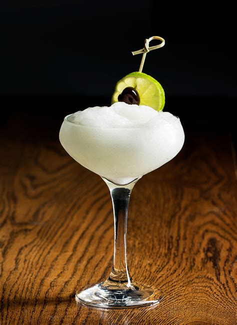

The Daiquiri

Story
The daiquiri was made first in Cuba, but the concept of a crispy cold combination of rum-sugar-lime is as old as rum itself.
One of the most delightful drinks, really lets the rum sing through, whether you use a clean, white rum or something funkier.
Ingredients
- 6 cL white rum, Cuban is the most classic choiuce here (Havana Club, Bacardi)
- 2 cL 1:1 simple syrup
- 3 cL lime juice
- a pinch of salt
Instructions
- Chill your favorite cocktail glass with ice and water.
- In a shaker tin, combine the rum, lime, and sugar,
- Dramatically sprinkle your pinch of salt into the shaker.
- Add a dutiful amounbt of ice.
- Shake the ever-loving shite out of your daiquiri, 15-20 seconds.
- Drain your chilling glass and strain your Daiquiri.
- Drink it while it is still laughing at you!
Home